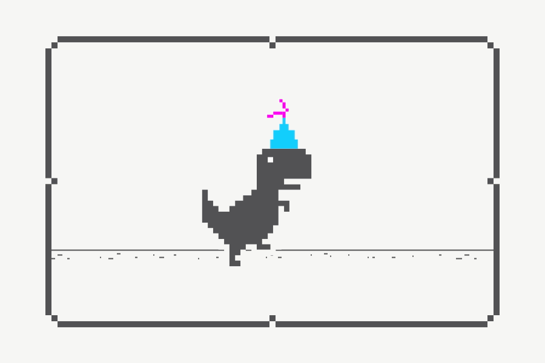

<div *ngIf="!noInternetConnection">
<router-outlet></router-outlet>
</div>
<div *ngIf="noInternetConnection" style="text-align: center;width: auto;">    
    <h1>THERE IS NO INTERNET CONNECTION</h1>    
        
</div>  

